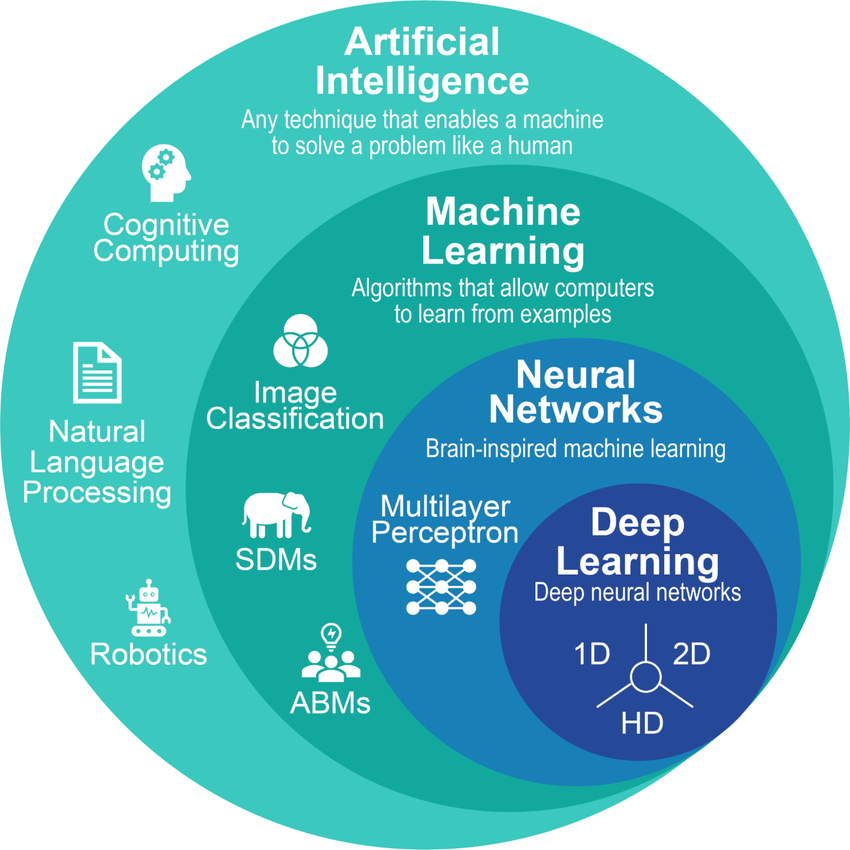
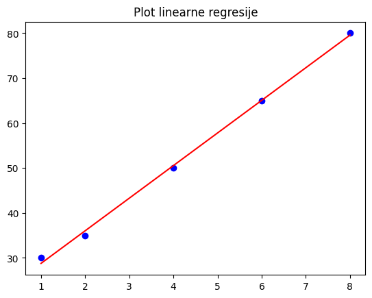
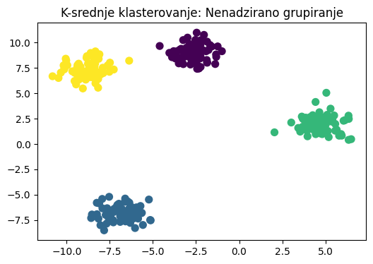

Introduction to Machine Learning
1. Koncept i osnove
1.1 Definicija mašinskog učenja (machine learning) 🤖
Mašinsko učenje je podskup vještačke inteligencije (AI) koji kompjuterima daje sposobnost da uče iz podataka bez eksplicitno specificiranih pravila, koja, za primjer, vrijede u programskim jezicima.
- Tradicionalno programiranje: Dajete kompjuteru Podatke + Pravila (Kod) \(\rightarrow\) Dobijate Odgovore.
- Mašinsko učenje (ML): Dajete kompjuteru Podatke + Odgovore (Oznake) \(\rightarrow\) On pronalazi Pravila (Model).
1.2 Workflow mašinskog učenja ➡️
Proces općenito slijedi ove korake: 1. Prikupljanje i predobrada podataka: Prikupljanje i čišćenje nestrukturisanih podataka radi dobivanja boljeg razumijevanja. 2. Treniranje modela: Ubacivanje podataka u algoritam radi minimiziranja greške. 3. Inferencija (Predviđanje): Korištenje obučenog modela za predviđanje ishoda na novim, neviđenim podacima.
2. Hijerarhija i tipovi 📊
2.1 Tri stuba klasičnog mašinskog učenja
| Tip | Uloga | Primjer |
|---|---|---|
| Nadzirano učenje (supervised) | Uči iz označenih podataka (Ulaz \(X\) i Izlaz \(Y\)). | Predviđanje cijena kuća (Regresija) ili klasifikacija emailova kao spam (Klasifikacija). |
| Nenadzirano učenje (unsupervised) | Pronalazi skrivene strukture u neoznačenim podacima. | Segmentacija kupaca, pronalaženje različitih grupa u podacima (Klasterovanje). |
| Učenje potkrepljenjem (reinforcement) | Agent uči metodom pokušaja i pogreške koristeći nagrade/kazne. | Obuka robota za hodanje, umjetna inteligencija za igre. |
2.2 Deep learning: Princip ljudskog mozga 🧠
Duboko učenje (Deep learning) je moćan, specijalizovani podskup ML koji koristi Neuronske mreže (slojevite matematičke strukture).
- Ključna razlika: Najveća snaga deep learning-a je Automatsko izvlačenje karakteristika. Dok klasični ML zahtijeva od ljudi da kažu modelu koje karakteristike da traži, deep learning sam pronalazi te karakteristike.
- Najbolje za: Nestrukturirane podatke poput slika, videa i prirodnog jezika (ChatGPT, Gemini, Claude, Sora AI itd.).

3. Računarski troškovi i alati 💸
3.1 Potreba za specijalizovanim hardverom
Deep learning za treniranje modela zahtjeva milijarda simultanih operacija nad matricama (matrična multiplikacija). Ovo zahtijeva paralelno izvršavanje zadataka.
- CPU (Centralna procesorska jedinica): Prespor za treniranje neuronskih mreža.
- GPU (Grafička procesorska jedinica): Neophodan za deep learning. Hiljade jezgara omogućavaju simultano izvođenje hiljada matematičkih operacija.
3.2 Okruženje: Google Colab 🛠️
Google Colab je besplatno, u pregledniku bazirano Jupyter Notebook okruženje koje omogućava obradu i analizu podataka kao i treniranje modela mašinskog učenja.
* GPU Pristup: Colab pruža besplatan, privremeni pristup moćnim grafičkim karticama (poput T4).
* Postavka: Meni \(\rightarrow\) Runtime \(\rightarrow\) Change runtime type \(\rightarrow\) Odaberite T4 GPU.
4. Praktični primjeri koda 💻
Za pokazivanje primjera koda biti će korištena Scikit-Learn Python biblioteka za klasično mašinsko učenje i TensorFlow/Keras za deep learning.
Mašinsko učenje obuhvata bezbroj različitih pristupa i modela koji imaju upotrebu u različitim oblastima, ovdje će biti pokazano par primjera.
Primjer 1: Linearna regresija (Predviđanje kontinualnih vrijednosti)
Tip: Nadzirana regresija (supervised regression)
import numpy as np
import matplotlib.pyplot as plt
from sklearn.linear_model import LinearRegression
# Podaci: Godine iskustva vs. plata
X = np.array([1, 2, 4, 6, 8]).reshape(-1, 1)
y = np.array([30, 35, 50, 65, 80])
model = LinearRegression()
model.fit(X, y)
print(f"Predviđena plata za 10 godina: ${model.predict([[10]])[0]:.2f}k")
# Vizualizacija
plt.scatter(X, y, color='blue', label='Stvarni podaci')
plt.plot(X, model.predict(X), color='red', label='Linija modela')
plt.title('Plot linearne regresije')
plt.show()
Rezultat programa:

Primjer 2: Stablo odluke / Decision tree (Predviđanje kategorija)
Tip: Nadzirana klasifikacija (supervised classification)
from sklearn.tree import DecisionTreeClassifier
from sklearn.datasets import load_iris
from sklearn.model_selection import train_test_split
# Podaci: Klasifikacija cvijeta Iris
iris = load_iris()
X_train, X_test, y_train, y_test = train_test_split(iris.data, iris.target, random_state=42)
# Treniranje
model = DecisionTreeClassifier(max_depth=3)
model.fit(X_train, y_train)
# Izlaz
score = model.score(X_test, y_test)
print(f"Tačnost stabla odluke: {score:.2f}")
print(f"Predviđanje uzorka 1: {iris.target_names[model.predict(X_test[:1])[0]]}")
Primjer 3: K-srednje klasterovanje (Pronalaženje grupa)
Tip: Nenadzirano učenje (unsupervised learning)
import matplotlib.pyplot as plt
from sklearn.cluster import KMeans
from sklearn.datasets import make_blobs
# 1. Generisanje podataka (Samo X, BEZ oznaka y)
X, _ = make_blobs(n_samples=300, centers=4, cluster_std=0.8, random_state=42)
# 2. Treniranje: Tražimo da pronađe 4 klastera (K=4)
model = KMeans(n_clusters=4, random_state=42, n_init=10)
model.fit(X)
labels = model.labels_
# 3. Vizualizacija
plt.figure(figsize=(6, 4))
plt.scatter(X[:, 0], X[:, 1], c=labels, s=50, cmap='viridis')
plt.title("K-srednje klasterovanje: Nenadzirano grupisanje")
plt.show()

Primjer 4: Deep learning (Neuronske mreže)
Tip: Prepoznavanje slika
import tensorflow as tf
# 1. Definisanje strukture neuronske mreže (3 sloja)
model = tf.keras.models.Sequential([
tf.keras.layers.Flatten(input_shape=(28, 28)), # Ulazni sloj
tf.keras.layers.Dense(128, activation='relu'), # Skriveni sloj
tf.keras.layers.Dense(10, activation='softmax') # Izlazni sloj
])
# 2. Definisanje procesa učenja
model.compile(optimizer='adam',
loss='sparse_categorical_crossentropy',
metrics=['accuracy'])
print("Struktura neuronske mreže definisana.")
print("Model je sada spreman za treniranje koristeći model.fit(podaci, oznake, epochs=5).")
5. Zaključak i sljedeći koraci 🏁
Sažetak ključnih tačaka
- ML vs deep learning: Mašinsko učenje je širok pojam za modele koji uče iz podataka; Deep learning je specijalizovani podskup koji koristi slojevite mreže, idealan za složeno prepoznavanje obrazaca u nestrukturiranim podacima (slike, tekst, zvuk).
- Potreba za podacima: Svaki tip mašinskog učenja, a posebno deep learning, konstantno zahtijeva ogromne količine kvalitetnih podataka. Glavni razlog preciznosti današnjih modela je broj kvalitetnih podataka.
- Računarski troškovi: Treniranje složenih modela zahtijeva specijalizovani hardver (GPU). Alati poput Google Colab-a čine ovo dostupnim.
- Proces je iterativan: Izgradnja ML modela nije jednokratni zadatak programiranja, to je kontinuirani ciklus prikupljanja podataka, treniranja, testiranja i prerađivanja modela dok ne postigne željene performanse.
Dodatak: Resursi za samostalno učenje
Nakon završenog uvoda, sljedeći korak je praktičan rad. Ovdje su neki od dobrih resursa za nastavak vašeg putovanja u mašinsko učenje:
📚 Knjige (Teorija i praksa)
- Hands-On Machine Learning with Scikit-Learn, Keras & TensorFlow (Aurélien Géron): Najbolja praktična knjiga za početnike i srednji nivo..
- The Hundred-Page Machine Learning Book (Andriy Burkov): Odličan kratki pregled ključnih koncepata, idealan za brzo utvrđivanje teorije.
🌐 Platforme i Skupovi podataka (Dataseti)
- Kaggle: Nezaobilazna platforma. Pruža:
- Milijarde skupova podataka (datasets) za vježbanje.
- Kaggle Notebooks (Kernels): Okruženje slično Colab-u.
- Takmičenja (competitions) za testiranje vještina.
- Huggingface: Pltaforma koja sadrži mnoštvo skupova podataka, pretreniranih modela, kurseva za učenje.
📺 YouTube kanali (Vizualizacija i tutorijali)
- StatQuest with Josh Starmer: Fenomenalan kanal za vizualno, intuitivno objašnjavanje složenih algoritama.
- 3Blue1Brown: Odličan kanal za stvaranje moćne matematičke intuicije za mašinsko učenje.
- DeepLearning.AI (Andrew Ng): Izvor za učenje od jednog od pionira Dubokog učenja.